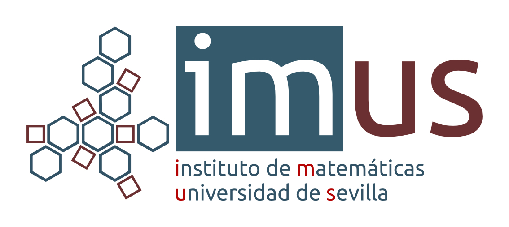
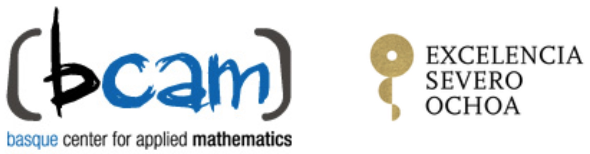

Mariano José Mateos Alberdi
Universidad de Oviedo - Campus de Gijón
El XXVI CEDYA/XVI CMA tendrá lugar del 15 al 19 de junio de 2020 en Gijón, en la Escuela Politécnica de Ingeniería de la Universidad de Oviedo.
Como viene siendo habitual, puedes participar presentando una comunicación oral o un póster. Al igual que en las últimas ediciones, queremos recordaros, especialmente a los miembros de la SEMA, que estamos abiertos a la recepción de vuestras propuestas para organizar minisimposios.
Toda la información relacionada con la conferencia la puedes encontrar en http://cedya2020.es. En particular, algunas fechas importantes a tener en consideración son:
Los socios de la SEMA disfrutarán de un descuento sobre la tarifa general. Además, los estudiantes socios de la SEMA podrán solicitar becas, según disponibilidad, que cubrirán la tarifa de inscripción.


El BCAM recibe la acreditación de excelencia Severo Ochoa por segunda vez. El director científico del BCAM, José Antonio Lozano, recogió este galardón en una ceremonia celebrada en Madrid, en el ministerio de Ciencia, Innovación y Universidades, el pasado 9 de septiembre, y que fue entregado por el ministro Pedro Duque Duque, con la presencia de Ángeles Heras Caballero, secretaria de estado de Universidades, Investigación, Desarrollo e Innovación, y Enrique Playán Jubillar, director de la Agencia Estatal de Investigación.
The Basque Center for Applied Mathematics and BEAZ will organize and host the 150th European Study Group with Industry. The event will take place in Bilbao from October 21st to October 25th, 2019.
ESGIs are internationally recognized as problem-solving forums for knowledge transfer. Industrialists bring a problem to one of these week-long brainstorming workshops that are attended by a group of mathematicians with varied expertise and it is anticipated that by the end of the week a first step towards a solution for the problem will be identified. The main goals of these events are increasing activity in Industrial Mathematics, spreading awareness of the benefits of this discipline, encouraging the interaction between researchers of different areas and promoting collaborative R&D projects with companies.
Five Basque companies will participate in ESGI 150: Athletic Club, CAF, Euskaltel, Iberdrola and Consorcio de Aguas Bilbao Bizkaia. The industrial challenges they have provided are related to data science, machine learning and mathematical modelling, and can already be consulted at the website.
Would you like to participate in ESGI 150? Admission is free, but registration is required. Please, fill in the form below before Sunday, September 22nd to register. Registration includes documentation, coffee breaks, lunches and conference dinner. A limited number of grants to cover travel and accommodation expenses will be also available.
| Date: 21-25 October 2019 | |
| Time: 9:00-18:00 |
|
| Location: BCAM (Alameda Mazarredo 14) and BEAZ (Sabino Arana 8) offices located in Bilbao | ESGI 150 is a satellite event of ICIAM 2019, the International Congress on Industrial and Applied Mathematics. |
The 4th edition of the Bilbao Data Science Workshop will be held at BCAM on November 7th and 8th and it will focus on attracting researchers in a variety of fields involving Data Science and Artificial Intelligence.
This workshop will feature five keynote and ten invited speakers exploring the nature of the relationship between Statistics, Computer Science and Mathematics to develop synergies among the fields. The main goal of this workshop is to create a scientific cross-talk between these different research fields.
The workshop structure, which combines high profile speakers across world-leading institutions, has a tradition of ensuring a diverse and lively interaction between participants, helping early-career researchers to focus their interests, as discussions emphasize current approaches and outstanding questions that should be addressed in future research.
| Date: 7-8 November 2019 | |
| Time: 09:30 |
|
| Location: BCAM seminar room. Alameda Mazarredo, 14 (Bilbao). | Would you like to present at BIDAS? If you’d like to present a poster during the workshop you can let us know in the sign-up form or by sending an email to bidas@bcamath.org, using the template, before October 31st. |
Un colloque Modélisation, Analyse et Simulation célébrant les 50 ans du Laboratoire Jacques-Louis Lions est organisé du 27 au 29 novembre, sur le campus des Cordeliers (Paris 6ème) de Sorbonne Université.
L’inscription est gratuite mais obligatoire (date limite : 17 novembre) sur le site https://ljll50.sciencesconf.org.
Nous espérons que vous pourrez participer à cet événement scientifique et convivial.
Le congrès se clôturera le vendredi 29 novembre par une soirée festive (exposition, concerts).
|
Amphithéâtre Farabeuf, Campus des Cordeliers, 15 rue de l’École de Médecine, 75006 Paris.
L’inscription est gratuite mais obligatoire.
Organisateurs: Valeria Banica, Albert Cohen, Marie Doumic, François Jouve, Michael Goldman, François Murat, Benoît Perthame, Marie Postel.